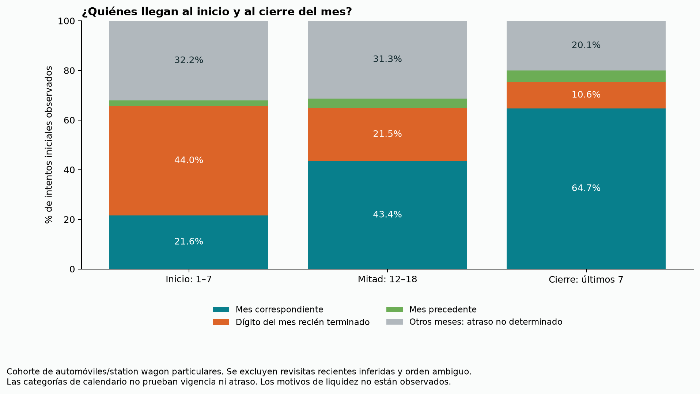

En promedio, los últimos siete días concentran el 26.8% de las revisiones del mes, un 33% más que una ventana de siete días a mitad de mes.
Qué permiten los archivos
Se verificó PPU en 2,320,324 registros.
No se encontró una marca explícita de reingreso en los 12 archivos. Las revisitas se infieren del historial observado.
Uso observado del mes precedente
3.69% de los intentos iniciales observados de la cohorte
ocurrieron en el mes anterior al del dígito (32,409 de 878,247).
Es una aproximación observable, no un porcentaje confirmado de adelantos efectivos.

«Otros meses» no significa atraso comprobado.
Para saber si el vehículo llegó con revisión vencida se necesita su certificado anterior e historial suficiente.
Los archivos no contienen ingresos ni fechas de sueldo y no identifican por sí solos liquidez.
Datos y auditoría en Excel · Metodología, denominadores y límites ·
Diccionario oficial